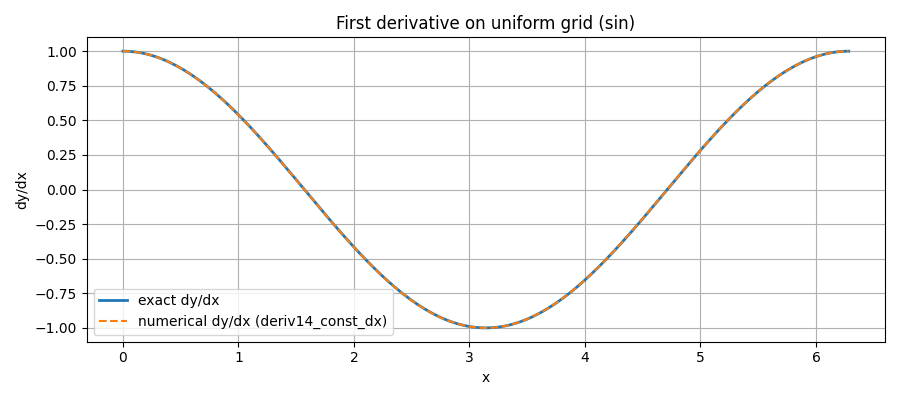
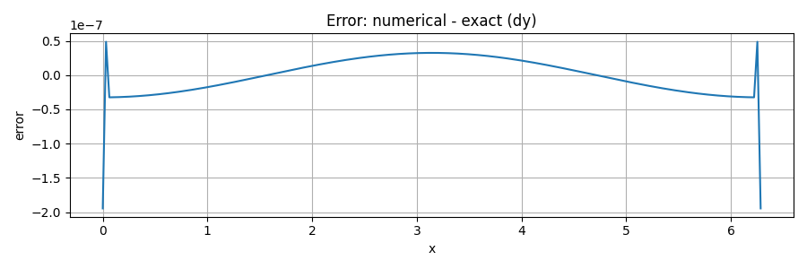
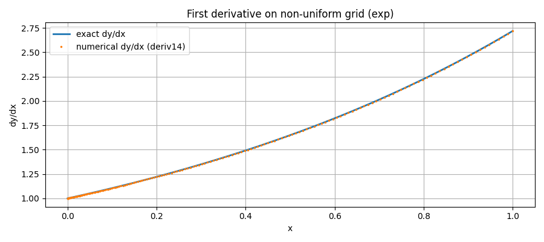
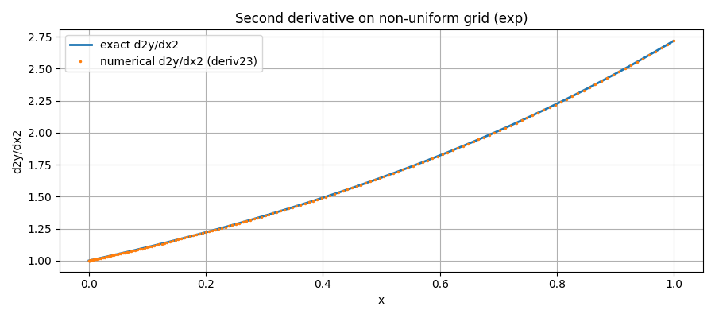
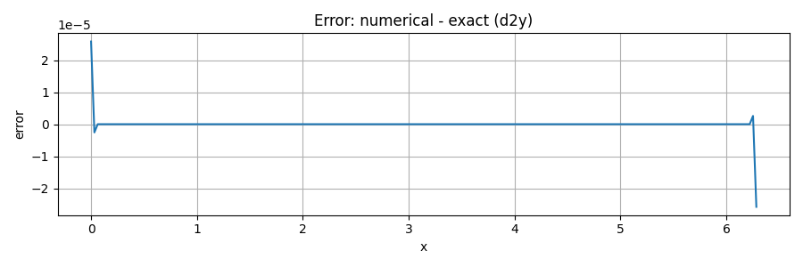
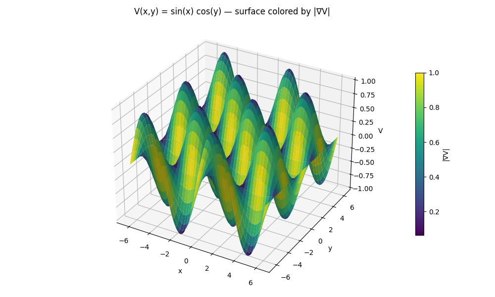
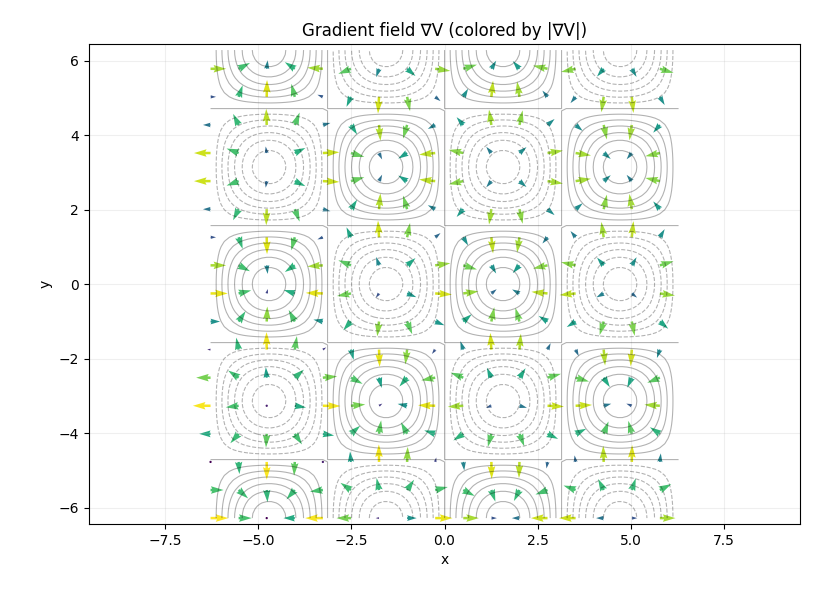
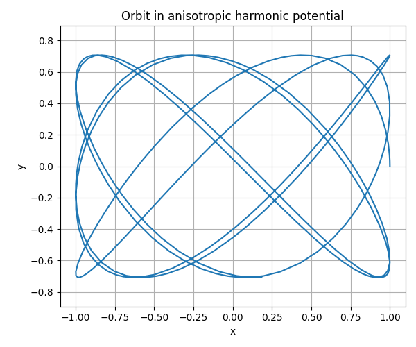

Numerical Derivatives functions¶
fd_weights_1d¶
Signature¶
fd_weights_1d(x_nodes: np.ndarray, x0: float, der: int) -> np.ndarray
Purpose¶
Computes the finite difference weithts that approximate the der-th derivatie of a function at point x0
using an aribtraty stencil x_nodes (they do not need to be uniform or ordered).
see fw_weights_jornal
if you want to know more.
It is the “engine” that the derivative routines use to form linear combinations of the type
Parameters, returns and Raises¶
Parameters
- x_nodes (array like, shape (m,)): Distinct stencil nodes; not required to be uniform or sorted
- x0 (float): Expansion point where the derivatie is approximated
- der (int): Derivative order (0,1,2,...)
Claim: In this project we typically use der ∈ {1,2}, but the algorithm supports 0 <= der <= m-1
Returns
- w (np,ndarray, shape (m,)): Weights such that f^(der)(x0) = \sum_j w[j]*f(x_nodes[j])
Raises¶
ValueErrorifder<0or ifm-1<der(need at leastm=der+1nodes)ZeroDivisionErrorif two stencil nodes coincide (nodes must be distinct)
How to use and Intuition¶
This function has no examples because it is called by others (e.g., deriv14, deriv1n, ...)
intuition (Where the coefficients come from): Build the Lagrange interpolant \(p(x)=\sum_j f(x_j)L_j(x)\)
The weiths are precisely \(w_j = L_j ^{der}(x_0)\). Fornberg's algorithm computes these derivatives recuservely and stably
filling a table c[j,k] (node j, derivative order k) and returning the column k=der chosen.
Notes
- Typical accuracy (near-uniform stencils): \((\mathcal{O}(h^{m-der}))\) for smooth functions, with h a characteristic spacing
- Polynomial exactness: Exact for all polynomials up do degree
m-1
_stencil_indices¶
Signature¶
_stencil_indices(n: int, k: int, m: int) -> np.ndarray
Purpose¶
Returns a contiguos, length- m window of indices insied [0,n-1] that is as centered around k as possible.
Near the boundaries is falls back to left or right aligned windowns. For even m, the window is biased one step to the left of perfect centering.
Internal helper to choose the stencil for finite-difference weights/derivatives use it to obtain a centered window in the
interior and one-sided windows near the boundaries.
Parameters, returns and Raises¶
Parameters
- n (int): Total number of samples (valid indices are 0..n-1)
- k (int): Target center index
- m (int): Stencil lenght (window size)
Returns
- idx (np.ndarray[int]), shape (m,): Monotonically increasing, contiguous indices start...start+m+1
deriv14_const_dx¶
Signature¶
deriv14_const_dx(y: np.ndarray, dx: float = 1.0) -> np.ndarray
Purpose¶
Compute the first derivative along the last axis of y sampled on a uniform grid, using the 5-point, 4th-order finite-difference scheme.
The routine is fully vectorized (no Python loops) and preserves the shape of y, making the function faster than deriv14.
⚠️ Unlike
deriv14, This function doesn't callfd_weights_1d, so it doesn't go through any loops and therefore calculates derivatives much faster. The price to pay for this is providing a uniform grid
- Interior (k = 2..n−3): centered 5-point, 4th-order
- Boundaries: standard one-sided 5-point formulas (also 4th-order) for
k∈{0,1,n−2,n−1}.
Parameters, returns and Raises¶
Parameters
y(array_like, shape(..., n)): Samples on a uniform grid along the last axis.dx(float, optional): Uniform spacinghbetween consecutive samples (default1.0).
Returns
dy(np.ndarray, same shape asy): Numerical approximation to ∂y/∂x along the last axis.
Raises / Assumptions
ValueErrorify.shape[-1] < 5(needs at least five points).- Assumes uniform spacing with finite
dxand monotonic (increasing or decreasing). - ⚠️ Error is \(\mathcal{O}(h^4)\) in the interior; at the ends it remains 4th-order but with typically larger constants.
When to use and Examples¶
Use when your data are on a uniform grid and you want a high-accuracy first derivative with a small, explicit stencil and fast vectorized implementation.
see the full test script in tests/helper_functions/Numerical_derivatives for more
Examples
-
Derivative of (sin) using deriv14_const_dx 
-
Error of the derivative 
'''
=== Test derivative: Uniform grid, first derivative (sin profile) ===
Grid: N=201, dx=3.142e-02, function: sin(kx), k=1.0
Max abs error (dy): 1.945e-07 (expected ~O(h^4) ~ 9.7e-07)
Note: boundary stencils are one-sided; error is typically larger at the ends than in the interior.
'''
deriv14¶
Signature¶
deriv14(y: np.ndarray, x: np.ndarray) -> np.ndarray
Purpose¶
Compute the first derivative along the last axis of y sampled at non-uniform coordinates x, using 5-point finite-difference stencils.
The routine builds Fornberg weights per local stencil, yielding 4th-order accuracy in the interior on smooth data (with one-sided high-order stencils at the boundaries).
Works for strictly increasing or decreasing x!! .
⚠️ Unlike
deriv14_const_dx, This function callfd_weights_1d, so it goes through many loops and therefore calculates derivatives slower. What gains in return is the ability to compute on an arbitrary non-uniform grid
Parameters, returns and Raises¶
Parameters
y(array_like, shape(..., n)): Function values along the last axis.x(array_like, shape(n,)): Sample locations, strictly monotonic (increasing or decreasing). Requiresn ≥ 5.
Returns
dy(np.ndarray, same shape asy): Numerical approximation to ∂y/∂x along the last axis.
Raises / Assumptions
ValueErrorifxis not 1D, ifn < 5, or ifxis not strictly monotonic.- Interior uses centered windows
[k-2..k+2]; endpoints use one-sided 5-point stencils. - Interior truncation error is typically \(\mathcal{0}(h^4)\) on near-uniform meshes (with \(h\) a typical spacing), while boundary errors have larger constants.
Notes¶
- Uses
fd_weights_1dto obtain exact polynomial reproductions up to degree 4 on each stencil. - Vectorized accumulation via
np.tensordotalong the last axis.
When to use and Examples¶
Use when your samples lie on a non-uniform 1D grid and you want high order interior accuracy without resampling to a uniform mesh.
see the full test script in tests/helper_functions/Numerical_derivatives for more
Examples (same structure as deriv14_const_dx; you can adapt the x grid to be non-uniform):
Examples
- Derivative of (exp) using deriv14 
'''
=== Test 3: Non-uniform grid, first derivatives (exp profile) ===
Non-uniform grid size: N=161
Max abs error (dy): 6.659e-09
=== Test 6: Expected error cases ===
Too few points (deriv14): deriv14 requires at least 5 samples.
x not 1D (deriv14): x must be 1D
Non-monotonic x (deriv14): x must be strictly monotonic (increasing or decreasing).
'''
deriv23¶
Signature¶
deriv23(y: np.ndarray, x: np.ndarray) -> np.ndarray
Purpose¶
Same algorithmic idea, assumptions, and stencil policy as deriv14, but for the second derivative on a non-uniform 1D grid.
Uses 5-point stencils with Fornberg weights (der=2): centered in the interior, one-sided near boundaries. Accuracy in smooth problems is typically 3rd–4th order in the interior (exact for polynomials up to degree 4 on uniform stencils).
Parameters, returns and Raises¶
- Parameters, shape constraints, monotonicity checks, and error handling are the same pattern as
deriv14, withder=2. - Returns an array with the same shape as
y, containing \(\partial y^2/ \partial x^2\) along the last axis.
When to use and Examples¶
Use when you need second derivatives on non-uniform grids with high-order interior accuracy and robust boundary handling.
see the full test script in tests/helper_functions/Numerical_derivatives for more
Examples
- Second Derivative of (exp) using deriv23 
'''
=== Test 3: Non-uniform grid, second derivatives (exp profile) ===
Non-uniform grid size: N=161
Max abs error (d2y): 2.625e-06
=== Test 6: Expected error cases ===
Too few points (deriv23): deriv23 requires at least 5 samples.
x not 1D (deriv23): x must be 1D
Non-monotonic x (deriv23): x must be strictly monotonic (increasing or decreasing).
'''
deriv23_const_dx¶
Signature¶
deriv23_const_dx(y: np.ndarray, dx: float = 1.0) -> np.ndarray
Purpose¶
Same idea as deriv14_const_dx, but computing the second derivative on a uniform grid using the 5-point, 4th-order scheme.
Interior uses the standard centered 5-point formula,
with one-sided 5-point stencils at the boundaries
Parameters, returns and Raises¶
- Parameters and return shape mirror
deriv14_const_dx(but for \(\partial y^2/ \partial x^2\)). Requires at least 5 points along the last axis; raisesValueErrorotherwise.
When to use and Examples¶
Use for uniform grids when you want a fast, vectorized second derivative with high accuracy and small stencil.
see the full test script in tests/helper_functions/Numerical_derivatives for more
Examples
-
Second Derivative of (sin) using deriv23_const_dx

-
Error of the second derivative 
'''
=== Test 2: Uniform grid, second derivative (sin profile) ===
Max abs error (d2y): 2.580e-05 (expected ~O(h^3) at edges ~ 3.1e-05)
Notes: The interior is still O(h^4) (see graph)
'''
deriv1n¶
Signature¶
deriv1n(y: np.ndarray, x: np.ndarray, n: int) -> np.ndarray
Purpose¶
General first-derivative on a non-uniform 1D grid using an (n+1)-point stencil with Fornberg weights.
Same overall idea/policies as deriv14 (centered interior, one-sided near boundaries), but here the stencil size is configurable via n (so m = n+1 points).
For smooth data on near-uniform meshes, interior truncation error scales \((\approx \mathcal{O}(h^n))\) (e.g., n=4 → 5-point, ~4th-order like deriv14).
What’s different vs. deriv14 / deriv14_const_dx:
- You choose accuracy/stencil size with
n(recommended 4 ≤ n ≤ 8: good accuracy vs. stability). - Larger stencils can be more sensitive to noise and wider spacing; extremely irregular nodes may degrade conditioning.
- Uses
_stencil_indicesto pick a centered window when possible, otherwise one-sided near edges.
Parameters, returns and Raises (briefly)¶
y: values along the last axis(..., N).x: strictly monotonic 1D array(N,); requiresN ≥ n+1.n: desired accuracy order; stencil size ism = n+1.- Returns
dywith the same shape asy(∂y/∂x along the last axis). - Raises
ValueErrorifxnot 1D/monotonic, ifN < n+1, or ifn < 2. - Internally: Fornberg weights with
der=1, accumulated vianp.tensordot.
When to use and Examples¶
When you want to dial precision (and stencil width) for first derivatives on non-uniform grids without resampling.
see the full test script in tests/helper_functions/Numerical_derivatives for more
Examples
"""
=== Test 4: Accuracy vs stencil size (deriv1n on sin) ===
n=4 (stencil m=5): max abs error = 2.964e-07
n=6 (stencil m=7): max abs error = 2.573e-10
n=8 (stencil m=9): max abs error = 2.558e-13
Expected: error generally decreases as stencil size increases (for smooth functions).
"""
gradientFunction (callable class)¶
Signature¶
ArrayLike = Union[np.ndarray, float]
class gradientFunction:
def __init__(self, f: Callable, eps: ArrayLike, Ndim: int, order: int = 4) -> None: ...
def __call__(self, x: ArrayLike, *args, **kwargs) -> np.ndarray: ...
Purpose¶
Build a callable gradient operator for a scalar field \(f:\mathbb{R}^{N}\to\mathbb{R}\) using finite differences of order 2 or 4, with per-axis steps eps.
Once constructed, gradientFunction(...) behaves like a function: df(x) → ∇f(x).
Intuition: along each coordinate \(i\), evaluate \(f\) at symmetrically shifted points \(x \pm \alpha\,\varepsilon_i\,\hat e_i\) (second or fourth-order central differences). Combine the batched evaluations with the precomputed coefficients to get the \(i\)-th partial derivative. All axes are processed in one vectorized call.
Why a class (not just a function)?¶
- Precomputation & reuse: offsets and peraxis coefficients depend only on
(eps, Ndim, order). The class builds them once and reuses across many calls → less Python overhead in tight loops (optimization, sampling, PDE steps). - Stateful configuration: keeps
f,Ndim,eps,ordertogether; the result is a callable object that plugs cleanly anywhere a function is expected.
Parameters, returns and Raises¶
__init__(f, eps, Ndim, order=4)
f(callable): scalar field; must accept arrays with last axis of lengthNdim(any leading batch axes allowed) and return an array of the same leading shape (scalar per point).eps(float | array_like): FD step(s). Scalar is broadcast to all axes; or pass a length-Ndimarray for peraxis steps.Ndim(int): dimensionality of the input points.order({2,4}): FD accuracy.2uses \([-1,+1]\) with coefficients \([-1/2,+1/2]\);4uses ([-2,-1,+1,+2]/12with coefficients[+1,-8,+8,-1]/12`.
__call__(x, *args, **kwargs)
x(array_like, shape(..., Ndim)): evaluation points (1 or many).- Returns
grad(np.ndarray, shape(..., Ndim)): gradient \(\nabla f(x)\). - Any extra
*args/**kwargsare forwarded tof.
Raises / Assumptions
ValueErroriforder ∉ {2,4}, ifepsis not scalar or(Ndim,), ifx’s last axis ≠Ndim, or ifNdimis inconsistent.fmust be vectorized enough to broadcast over the added stencil axes; the class constructs inputs of shape(..., order, Ndim, Ndim)and expects outputs(..., order, Ndim)(scalar per displaced point).
Notes¶
- Accuracy vs. step size: truncation error decreases with smaller
eps, but round off grows pickepsconsistent with the scale ofxandf(a common rule of thumb: start near \(\sqrt{\varepsilon_\text{mach}} \times \text{scale}\) for order-2, and somewhat larger for order-4). - Anisotropic steps: use an
epsvector to reflect different physical scales per axis. - Performance/memory: very large
Ndimor huge batches may increase temporary array sizes; if needed, evaluate in tiles.
When to use and Examples¶
Use when you need a drop-in gradient for a black-box scalar function (e.g., potentials \(V(\phi)\) in multi-field models, without deriving/maintaining analytic gradients. It’s especially handy inside optimizers, line searches, or field evolution steps).
see the full test script in tests/helper_functions/Numerical_derivatives for more
Examples
-
Gradient of \(V(x,y)=\sin(x)*\cos(y) [order=4]\) 
-
Gradient field for intuition 
"""
=== Test 7: Gradient on V(x,y) = sin(x) * cos(y) (order=4) ===
Grid: 101x101, eps=1e-4 (per axis), order=4
Max |grad error| = 4.145e-12, Mean |grad error| = 1.757e-12
Notes: O(h^3) at edges
"""
- Convergence with eps (1D)

# Convergence is faster with higher order, as expected
- Physical example: 2D anisotropic harmonic oscillator 
"""
=== Test 11: Electrostatic potential (softened) and field via gradientFunction ===
Rel. error stats away from charges: max=1.394e-09, mean=2.493e-11
=== Test 12 (bonus): 2D anisotropic harmonic oscillator with rkqs and ∇V ===
Energy stats: Emin=1.000000, Emax=1.000001, ΔE=6.510e-07```
"""
"""
=== Test 13: Expected error cases (gradient) ===
Invalid order (gradientFunction): order must be 2 or 4
Wrong eps shape (gradientFunction): `eps` must be scalar or have shape (2,)
x last axis mismatch (gradientFunction): Last axis of x must have length Ndim=2
Non-scalar f (gradientFunction): ValueError('operands could not be broadcast together with shapes (4,4,2,2) (4,2) ')
"""
hessianFunction (callable class)¶
Signature¶
class hessianFunction:
def __init__(self, f: Callable, eps: ArrayLike, Ndim: int, order: int = 4) -> None: ...
def __call__(self, x: ArrayLike, *args, **kwargs) -> np.ndarray: ...
Purpose¶
Build a callable Hessian operator for a scalar field \(f:\mathbb{R}^N\!\to\!\mathbb{R}\) using finite differences of order 2 or 4 with per-axis steps eps.
Once constructed, hessianFunction(...) acts like a function: hf(x) → H(x) with shape (..., Ndim, Ndim).
Intuition (how entries are formed): • Diagonal terms \(H_{ii}\) use 1D second-derivative stencils along axis \(i\) (order-2: 3-point; order-4: 5-point). • Off-diagonal terms \(H_{ij}\) with \(i\neq j\) use the tensor product of two first-derivative stencils (one in \(i\), one in \(j\)), i.e.
\[ \frac{\partial^2 f}{\partial x_i\,\partial x_j}(x) \;\approx\; \sum_{a,b}\frac{c^{(1)}_a}{\varepsilon_i}\,\frac{c^{(1)}_b}{\varepsilon_j}\; f\!\big(x + a\,\varepsilon_i\,\hat e_i + b\,\varepsilon_j\,\hat e_j\big), \]where \(c^{(1)}\) are the central-difference coefficients of order 2 or 4. The class precomputes all shifts and weights and then evaluates
fin batched fashion.
Why a class (not just a function)?¶
- Precomputation & reuse: shifts/weights depend only on
(eps, Ndim, order). The class builds them once and reuses across many calls → less overhead in inner loops (optimizers, Newton steps, variational solvers). - Stateful configuration: keeps
f,Ndim,eps,ordertogether; exposes a clean callable API. - Vectorized batching: each diagonal/off-diagonal block is evaluated by feeding a whole bundle of shifted points to
fat once, then combining with the stored weights. - Symmetry by construction: it sets \(H_{ij}\!=\!H_{ji}\) after computing \(i>j\).
Parameters, returns and Raises¶
__init__(f, eps, Ndim, order=4)
f(callable): scalar field; must accept arrays with last axis sizeNdim(any leading batch dims allowed) and return a scalar per point (same leading shape).eps(float | array_like): FD step size(s). Scalar broadcasts to all axes; or pass a length-Ndimarray for anisotropic steps.Ndim(int): dimensionality of the input points.order({2,4}): finite-difference accuracy (order-2 or order-4 central stencils).
__call__(x, *args, **kwargs)
x(array_like, shape(..., Ndim)): evaluation points.- Returns
H(np.ndarray, shape(..., Ndim, Ndim)): the Hessian atx. - Any extra
*args/**kwargsare forwarded tof.
Raises / Assumptions
ValueErroriforder ∉ {2,4}, ifepsis not scalar or(Ndim,), or ifx’s last axis ≠Ndim.
Notes¶
- Stencils used: • Order-2: first-deriv offsets \([-1,+1]\) with coeffs \([-1/2,+1/2]\); second-deriv offsets \([-1,0,+1]\) with coeffs \([1,-2,1]\). • Order-4: first-deriv offsets \([-2,-1,+1,+2]\) with coeffs \([+1,-8,+8,-1]/12\); second-deriv offsets \([-2,-1,0,+1,+2]\) with coeffs \([-1,16,-30,16,-1]/12\).
- Work per call (per point): roughly \(\sum_i m_2\) (diagonals) + \(\sum_{i>j} m_1^2\) (off-diagonals) function evaluations, where \(m_1\) and \(m_2\) are the first/second-derivative stencil lengths (2 or 4 → \(m_1=2,4\); \(m_2=3,5\)). These are batched per block to reduce Python overhead.
- Accuracy vs step size: smaller
epsreduces truncation error but increases round-off sensitivity; pickepscommensurate with scales ofxandf. - Anisotropic physics: per-axis
epsis useful when coordinates have different natural scales.
When to use and Examples¶
Use when you need a drop-in Hessian for a black-box scalar potential—e.g., multi-field potentials \(V(\phi)\) in phase-transition scans—without deriving analytic second derivatives. Useful in Newton/Quasi-Newton methods, curvature analysis, and stability checks.
see the full test script in tests/helper_functions/Numerical_derivatives for more
Examples
"""
=== Test 8: Hessian exactness on quadratic form (order=4) ===
Max |H - A| = 1.426e-06, Mean |H - A| = 7.628e-08
Expected: near machine precision for smooth quadratics with small eps.
=== Test 9: Hessian with mixed terms (order=4) ===
Grid 60x60, eps=[1e-4,3e-4]: max |H_num - H_ex| = 7.461e-07
=== Test 13: Expected error cases (hessian) ===
Invalid order (hessianFunction): order must be 2 or 4
Non-scalar f (hessianFunction): ValueError('operands could not be broadcast together with shapes (4,16,2) (16,) ')
"""